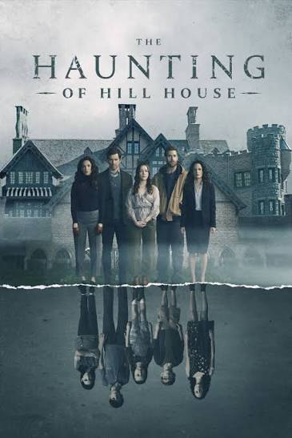
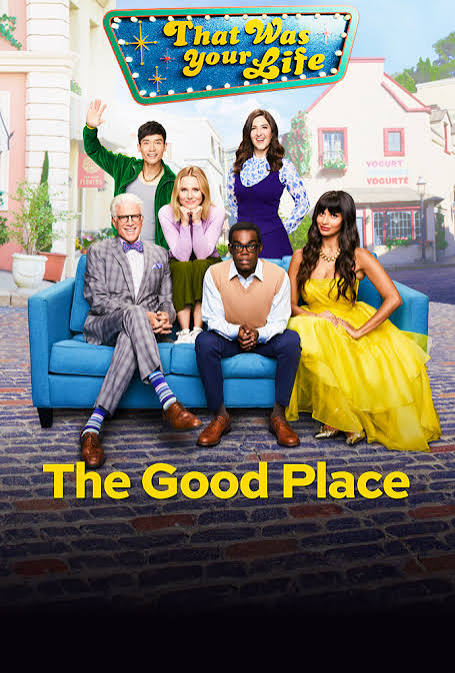

Introduction to My Screen Favorites
Finding great screen entertainment that stays with you long after the credits roll is a rare treat. Whether it is mind-bending science fiction, razor-sharp comedy, or heart-stopping thrillers, some of these stories have always kept me glued to the screens. We all are so lucky to live in an age where we have amazingly creative people like the famous director Christopher Nolan, who has given us unforgettable masterpieces. At the same time, even those of us who are fans of lighthearted sitcoms like Friends and The Big Bang Theory have been taken through many emotional roller coasters. At the end of the day, these iconic titles aren't just entertainment—they've shaped how I see and enjoy storytelling as a whole.
Top Genres I Enjoy
Here are the four primary genres that dominate my watchlist whenever I sit down to unwind:
- Sci-Fi & Mind-Benders
- Mystery & Crime Thrillers
- Sitcoms & Comedy
- Psychological & Horror Drama
Top 3 Must-Watch TV Show Recommendations
From my huge watchlist of TV shows, here are three standout recommendations that I believe many people may not have watched yet, but will immensely enjoy if given a try.
-
The Haunting of Hill House (2018)
If you are into psychological-horror dramas, this is an absolute must-watch for you. This 10-episode miniseries is a masterclass in non-linear storytelling, exploring grief, family dynamics, and trauma through a chilling haunted house premise.
-
The Good Place (2016–2020)
Though a little quirky at times, this show definitely has great twists and really beautiful moments, with one of the best series endings I have ever seen on television. It blends ethics, moral philosophy, and laugh-out-loud comedy effortlessly.
-
Sarabhai vs Sarabhai (2004–2006)
It is a little disappointing that such an entertaining show was discontinued after its first season, but its existing episodes are still entertaining enough for me to recommend to anyone looking for sharp Indian sitcom humor.
Featured Posters


All-Time Favorite Movies: Ratings & Breakdown
Below is a breakdown with critic scores on IMDb for my all-time favorite feature films:
| Movie Title | Genre | IMDb Rating |
|---|---|---|
| Interstellar | Sci-Fi / Drama | 8.7 / 10 |
| Inception | Sci-Fi / Thriller | 8.8 / 10 |
| Spider-Man: Into the Spider-Verse | Animation / Superhero | 8.4 / 10 |
| The Truman Show | Sci-Fi / Satire | 8.2 / 10 |
| The Usual Suspects | Crime / Mystery | 8.5 / 10 |
| Avengers: Endgame | Superhero / Action | 8.4 / 10 |
| Knives Out | Mystery / Comedy | 7.9 / 10 |
Conclusion
Great movies and television series do far more than just help us pass the time; they inspire us, spark conversations, and leave lasting emotional impressions. Whether it is an intricate sci-fi epic like Interstellar or an engaging comedy like Sarabhai vs Sarabhai, each title on this list represents a unique piece of storytelling excellence. As cinema and television continue to evolve with new creators and platforms, I look forward to discovering many more stories that redefine what screen entertainment can achieve.